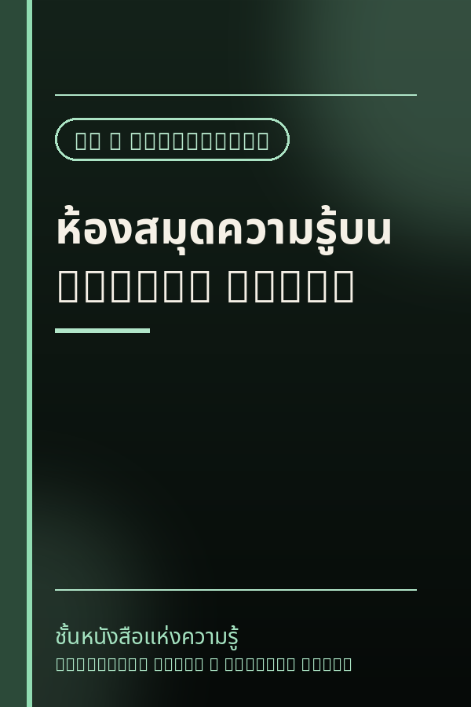
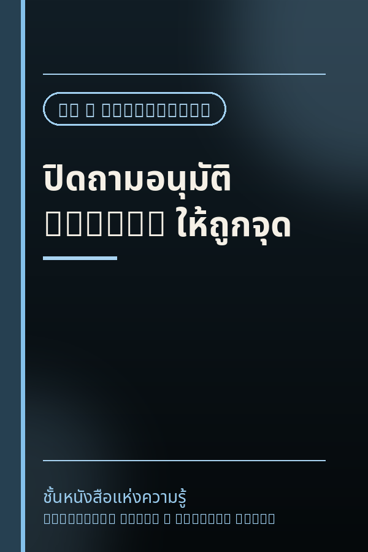
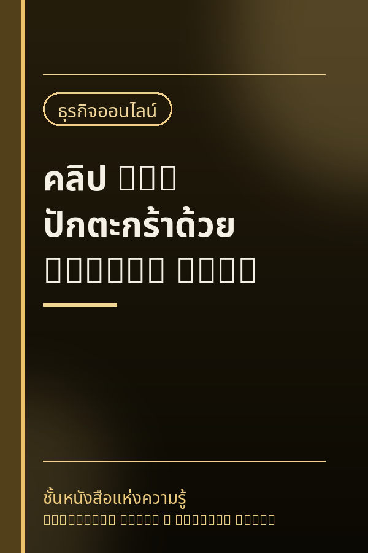

 AI / Automation ห้องสมุดความรู้บน GitHub Pages publish on 24/08/2026 ออกแบบห้องสมุดดิจิทัล: ข้อมูลรวมไว้ที่ JSON จุดเดียว สคริปต์เจนหน้าเว็บจากเทมเพลต ระบบ --check กันพัง และกติกาให้ AI ช่วยดูแลอย่างปลอดภัย เปิดอ่าน →
 AI / Automation ปิดถามอนุมัติ Hermes ให้ถูกจุด publish on 24/08/2026 ทำไมตั้ง approvals.mode=off แล้ว /new ยังถามอยู่ — เพราะคำสั่งทำลายล้างมีประตูที่สองชื่อ destructive_slash_confirm พร้อมวิธีตั้งค่าและข้อควรระวัง เปิดอ่าน →
 ธุรกิจออนไลน์ คลิป UGC ปักตะกร้าด้วย Google Flow publish on 24/08/2026 เวิร์กโฟลว์จริง: เตรียมรูปสินค้า ตั้งค่าโปรเจกต์ เขียนพรอมต์ให้พูดไทย แนบภาพอ้างอิง เลือก 9:16 และดาวน์โหลดวิดีโอแนวตั้งพร้อมเสียง เปิดอ่าน →